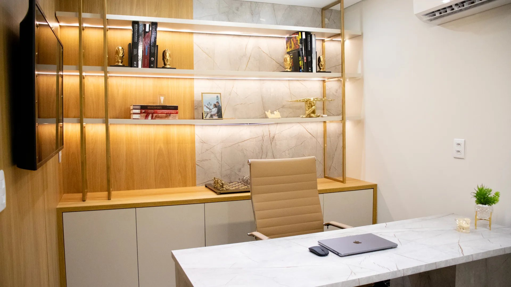

LUMINO · GURUPI, TO
Seu próximo
passo começa
com você.
Um espaço para conhecer possibilidades para o seu sorriso e sua face. Uma conversa para entender o que faz sentido para você.
Por onde você quer começar?Seu interesse. Seu tempo. Um cuidado individual.

O primeiro passo
é uma boa conversa.
01 / DESCUBRA
O que você gostaria
de conhecer melhor?
Comece pelo seu interesse.
A avaliação é o momento de conversar
sobre as possibilidades para o seu caso.
Ainda não sabe por onde começar? Quero conversar com a equipe
02 / DO INTERESSE À CONVERSA
Menos etapas.
Mais espaço
para escutar você.
Você não precisa decidir um tratamento agora.
O primeiro passo é apresentar seu interesse.
- 01
Escolha o assunto
Conte o que chamou sua atenção.
- 02
Indique sua preferência
Escolha um período para conversar sobre a avaliação.
- 03
Continue pelo WhatsApp
Sua mensagem já leva o contexto. A equipe confirma a disponibilidade e orienta o próximo passo.
03 / VAMOS CONVERSAR
Uma avaliação.
O seu ponto de partida.
Prepare sua solicitação abaixo.
Você confere a mensagem antes de enviar.
ANTES DA SUA CONVERSA
Uma escolha com clareza.
Preciso saber qual tratamento quero? +
Não. Escolha “Quero orientação” e use a conversa com a equipe como ponto de partida.
O pedido já reserva um horário? +
Não. Esta página prepara uma solicitação. O horário e as condições de atendimento são confirmados diretamente pela equipe.
Posso conhecer melhor a Lumino? +
Visite o Instagram da Lumino ou consulte a localização pelo link abaixo.
LUMINO · GURUPI